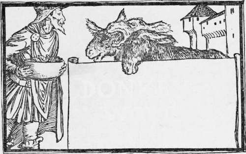
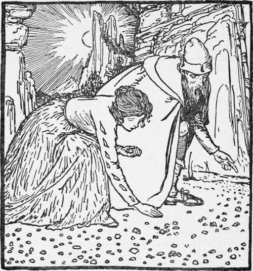

Donkey-Wort
Description
This section is from the book "Household Tales by Brothers Grimm", by Brothers Grimm. Also available from Amazon: Household Tales by Brothers Grimm.
Donkey-Wort
A Merry young huntsman, named Peter, was once riding briskly along through a wood, one while winding his horn and another singing a merry song—
"Merry rides the huntsman bold,
Blithsome and gay rides he:
The minds his horn, and he bends his bow,
Under the green tree."
As he journeyed along, there came up a little old woman, and said to him, " Good day, good day, Mr Huntsman bold! you seem merry enough, but I am hungry and thirsty; do pray give me something to eat." So Peter took pity on her, and put his hand in his pocket, and gave her what he had. Then he wanted to go his way ; but she took hold of him, and said, " Listen, Master Peter, to what I am going to tell you; I will reward you for your kindness. Go your way, and after a little time you will come to a tree, where you will see nine birds sitting upon a cloak. Shoot into the midst of them, and one will fall down dead. The cloak will fall, too; take it as a wishing-cloak, and when you wear it. you will find yourself at any place you may wish to be. Cut open the dead bird, take out its heart and keep it, and you will find a piece of gold under your pillow every morning when you rise. It is the bird's heart that will bring you this good luck."
The huntsman thanked her, and thought to himself, "If all this do happen, it will be a fine thing for me." When he had gone a hundred steps or so, he heard a screaming and chirping in the branches over him; so he looked up, and saw a flock of birds, pulling a cloak with their bills and feet; screaming, fighting, and tugging at each other, as if each wished to have it himself. "Well," said the hunstman, "this is wonderful; this happens just as the old woman said." Then he shot into the midst of them, so that their feathers flew all about. Off went the flock chattering away; but one fell down dead, and the cloak with it. Then Peter did as the old woman told him, cut open the bird, took out the heart, and carried the cloak home with him.
The next morning, when he awoke, he lifted up his pillow, and there lay the piece of gold glittering underneath ; the same happened next day, and, indeed, every day when he arose. He heaped up a great deal of gold, and at last thought to himself, " Of what use is this gold to me whilst I am at home ? I will go out into the world, and look about me."
Then he took leave of his friends, and hung his horn and bow about his neck, and went his way merrily as before, singing his song—
"Merry rides the huntsman bold,
Blithsome and gay rides he:
The minds his horn, and he bends his bow,
Under the green tree."
Now it so happened that his road led through a thick wood, at the end of which was a large castle in a green meadow; and at one of the windows stood an old woman, with a very beautiful young lady by her side, looking about them. The old woman was a fairy, and she said to the young lady, whose name was Meta, " There comes a young man out of the wood, with a wonderful prize; we must get it away from him, my dear child, for it is more fit for us than for him. He has a bird's heart that brings a piece of gold under his pillow every morning." Meantime the huntsman came nearer, and looked at the lady, and said to himself, " I have been travelling so long, that I should like to go into this castle and rest myself, for I have money enough to pay for anything I want" ; but the real reason was, that he wanted to see more of the beautiful lady. Then he went into the house, and was welcomed kindly ; and it was not long before he was so much in love, that he thought of nothing else but looking at Meta's eyes, and doing everything that she wished. Then the old woman said, "Now is the time for getting the bird's heart." So Meta stole it away, and he never found any more gold under his pillow; for it lay now under Meta's, and the old woman took it away every morning: but he was so much in love that he never missed his prize.
" Well," said the old fairy, " we have got the bird's heart, but not the wishing-cloak yet, and that we must also get." "Let us leave him that," said Meta; "he has already lost all his wealth." Then the fairy was very angry, and said, "Such a cloak is a very rare and wonderful thing, and I must and will have it." So Meta did as the old woman told her, and sat herself at the window, and looked about the country, and seemed very sorrowful. Then the huntsman said, "What makes you so sad?" " Alas, dear sir," said she, " yonder lies the granite rock, where all the costly diamonds grow, and I want so much to go there, that, whenever I think of it, I cannot help being sorrowful; for who can reach it ? only the birds and the flies,—man cannot." " If that's all your grief," said huntsman Peter, " I'll take you there with all my heart." So he drew her under his cloak, and the moment he wished to be on the granite mountain, they were both there.
The diamonds glittered so on all sides, that they were delighted with the sight, and picked up the finest. But the old fairy made a deep drowsiness come upon him; and he said to the young lady, " Let us sit down and rest ourselves a little, I am so tired that I cannot stand any longer." So they sat down, and he laid his head in her lap and fell asleep; and whilst he was sleeping on, the false Meta took the cloak from his shoulders, hung it on her own, picked up the diamonds, and wished herself at her own home again.
When poor Peter awoke, and found that his faithless Meta had tricked him, and left him alone on the wild rock, he said, "Alas! what roguery there is in the world!" And there he sat in great grief and fear upon the mountain, not knowing what in the world he should do.
Now this rock belonged to fierce giants, who lived upon it; and as he saw three of them striding about, he thought to himself, "I can only save myself by feigning to be asleep " ; so he laid himself down, as if he were in a sound sleep. When the giants came up to him, the first kicked him with his foot, and said, "What worm is this that lies here curled up? " "Tread upon him and kill him," said the second. "It's not worth the trouble," said the third; " let him live: he will go climbing higher up the mountain, and some cloud will come rolling and carry him away." Then they passed on. But the huntsman had heard all they said, and as soon as they were gone he climbed to the top of the mountain; and when he had sat there a short time, a cloud came rolling around him, and caught him in a whirlwind, and bore him along for some time, till it settled in a garden, and he fell quite gently to the ground, amongst the greens and cabbages.
Continue to:
Tags
fairy tales, children's stories, brothers grimm, household tales